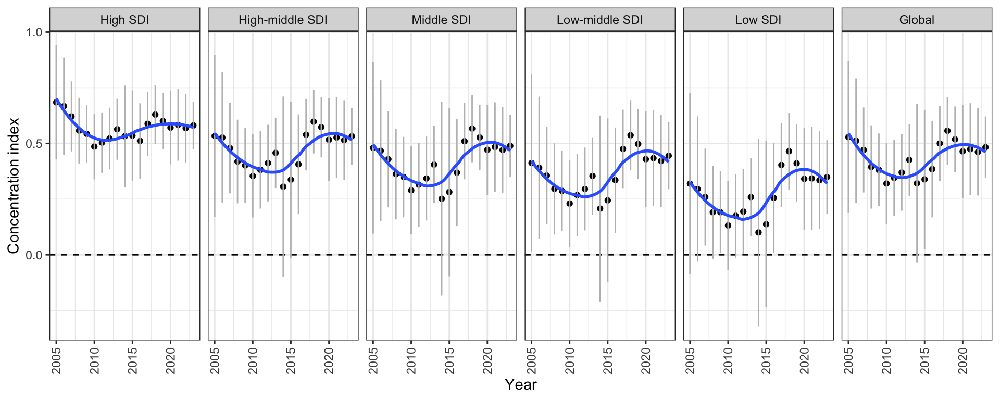
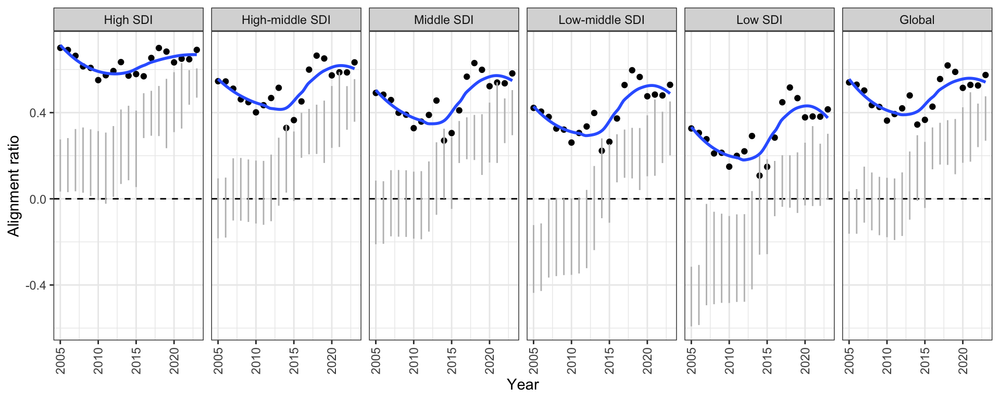

Regional concentration index analysis
Trial Quarto migration from scripts/regional-concentration-index.ipynb
1 Analysis aim
This report examines whether inequality in GWAS attention is aligned with disease burden. The primary descriptive statistic is the concentration index of GWAS attention when diseases are ranked by DALY burden.
The notebook metric is retained as concentration_index. This migration also reports:
alignment_ratio = concentration_index / attention_giniThis ratio can be read as the share of GWAS attention inequality that is aligned with the disease-burden ranking. Values near 1 indicate that GWAS attention inequality is strongly ordered by burden; values near 0 indicate that attention inequality is not ordered by burden; negative values indicate concentration among lower-burden diseases.
As a proportional-allocation sensitivity analysis, this report also calculates:
share_distance = 0.5 * sum(abs(attention_share - daly_share))
share_alignment = 1 - share_distanceThis asks a different question: how close the share of GWAS attention is to the share of DALYs.
2 GWAS attention data
3 Main SDI comparison


4 Sex-specific analysis

5 Country-level analysis


6 Lorenz curves

7 Age-specific analysis

8 GWAS attention inequality over time


9 Burden and attention in the same year



10 Fixed GBD year with changing GWAS attention year

11 High-SDI and Low-SDI burden priority


12 Zero-attention disease burden trends

13 Reproducibility notes
This Quarto migration keeps scripts/regional-concentration-index.ipynb unchanged. The report sources reusable code from scripts/regional_concentration_index/R/ and can be rendered from the repository root with:
quarto render scripts/regional_concentration_index/regional_concentration_index.qmd --output-dir outputs